作者：创世魂
● 概述
本组件主要用于将两个组件分隔开，并且通过分隔条还可以实现动态调整这两个组件的尺寸。
● 方向(写)
帮助文档如下图：
通过本属性可以设置组件的拖动方向。
共有两个方向“横向”和“纵向”。
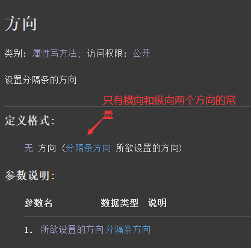
代码编写如下图：
直接在组件属性栏填写本属性并选择想要的拖动的方向即可。
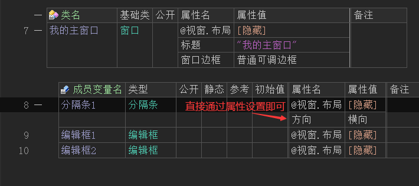
运行效果如下图：
分隔条横向拖动效果。
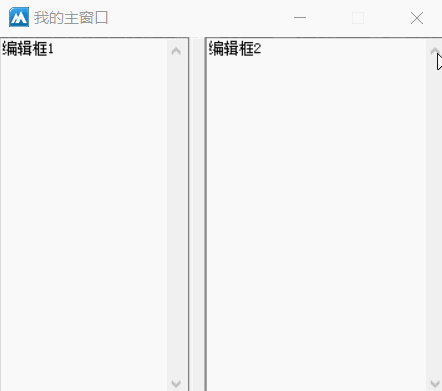
分隔条纵向拖动效果。
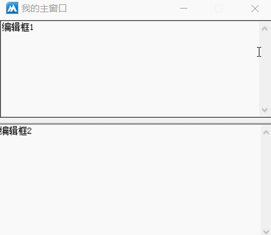
● 背景颜色(写)
帮助文档如下图：
通过本属性可以设置分隔条的背景色。
通属性值可提供“颜色类”中的常量值，或者使用“0x0000FF”十六进制颜色值。
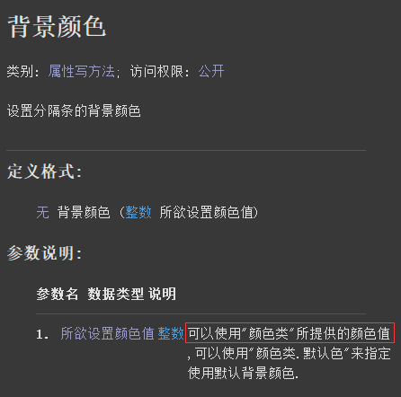
代码编写如下图：
直接在当前组件的属性栏设置本属性即可，例如这里设置了“颜色类.红色”。
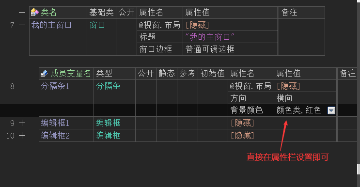
运行效果如下图：
最终分隔条的颜色会变成红色。
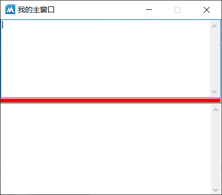
● 被拖动(事件)
帮助文档如下图：
当分隔条组件被拖动的时候会产生本事件并返回两个参数。
参数1：用于返回原位置的坐标位置，如果分隔条为横向则提供“顶边”的纵坐标值，否则提供“左边”的横坐标值。
参数2：用于返回当前拖动到的目标位置坐标，如果分隔条为横向则提供“顶边”的纵坐标，否则提供“左边”的横坐标。
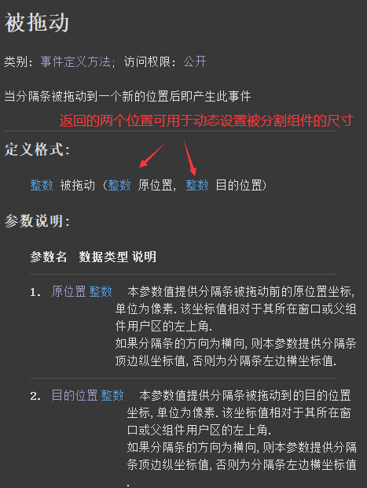
代码编写如下图：
1、首先添加“被拖动”事件。
2、其次调整“分隔条”的顶边位置，直接让其等于目标位置即可，因为返回的目标位置就是当前组件的顶边纵坐标。
3、调整上编辑框的高度直接等于目标位置即可。
4、最后调整下编辑框的顶边和高度。
注意：这里使用“取用户区高度()”是因为当前组件的父组件是窗口，如果在实际开发过程中父组件是组件布局器或者其它的容器组件，需要使用这个容器组件的高度尺寸来进行动态调整。
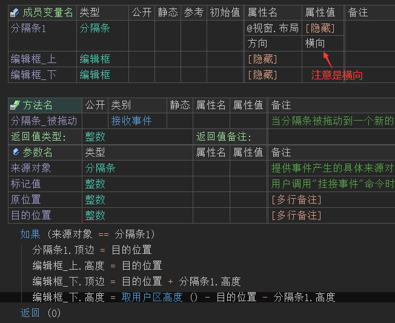
运行效果如下图：
最终可以看到当分隔条被拖动的时候，上下编辑框的尺寸也在随之改变，并且分隔条的位置也发生了移动。
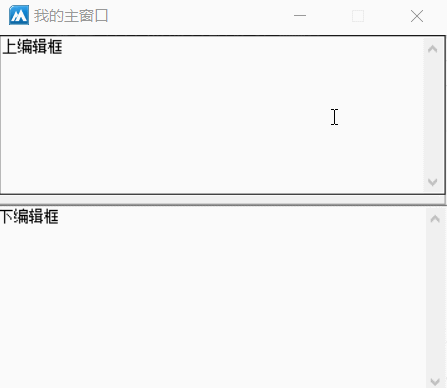
纵向分隔条代码编写：
如果当方向为纵向的时候，只需要将代码中的“顶边”全部改成“左边”，所有的“高度”改成“宽度”即可。
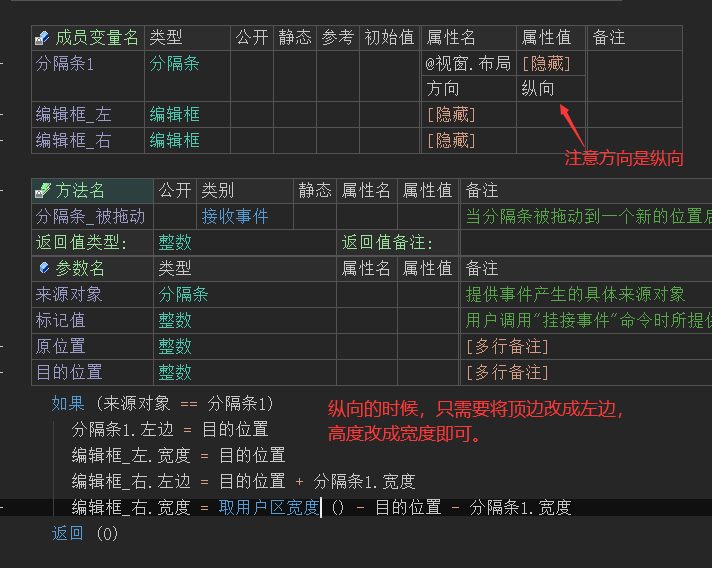
运行效果如下图：
最终依然可以完美的拖拽。
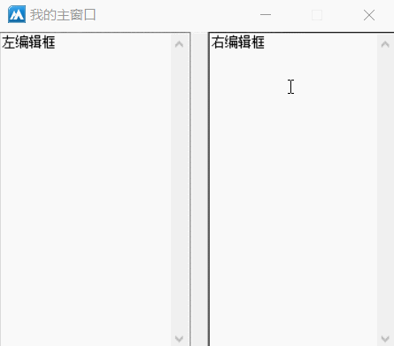